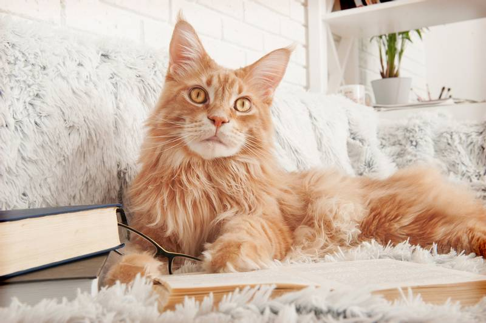
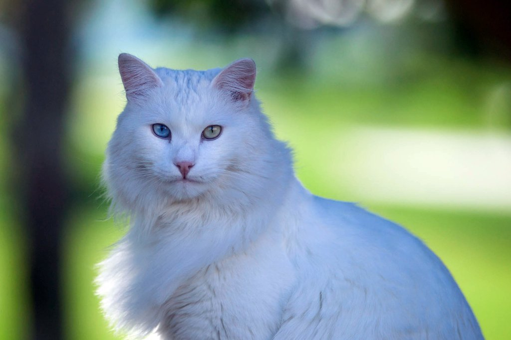

Известные породы :

Курильский бобтейл
Курильский бобтейл — короткохвостые, с «хвостом-помпоном», кошки. Не боятся воды и низких температур, отличные рыболовы. Очень активны и игривы. Настоящие охотники, крысоловы. Из-за отсутствия нормального хвоста их тело сбалансировано увеличенными задними ногами. Они длиннее передних ног и мощнее, чем у кошек других пород. Что позволяет курильским бобтейлам совершать длинные, высокие прыжки. Дружелюбны, любопытны, умны и очень сообразительны, проявляют привычки собак — бегают за игрушкой, приносят её. Преданы своим хозяевам, как правило, выбирают одного-двух, любят путешествовать с хозяином.
Мейн-кун
.jfif)
Особенностью породы является и необычный мелодичный голос. Мейн-кун не будет истошно мяукать на всю квартиру, когда голоден, а промурлыкает свою просьбу непосредственно хозяину.
Сибирская кошка
Кошки среднего или большого размера, с отличными физическими способностями, шерстяной покров очень пушистый. Тело оставляет общее впечатление округленности и сглаженности. Сибиряки взрослеют медленно, достигая зрелости к 5 годам, кошки несколько мельче котов. Поэтому надо внимательно подходить к определению соответствия стандарту породы кошек и молодых котов. Вес котов в среднем от 6 до 9 кг, кошек от 3,5 до 7. При определении типа животного размер вторичен.
Турецкая ангора — элегантная некрупная гибкая кошка с головой средней длины, клиновидной формы. Подбородок сильный, мордочка средней длины, достаточно узкая, плавно очерчена. Профиль с очень лёгким переходом, миндалевидными, слегка косо поставленными глазами, большими открытыми заострёнными высоко и довольно близко друг к другу поставленными ушами, изящной шеей, удлинённым сухим гибким телом, высокими сухими конечностями с небольшими почти овальными лапками, длинным, заостряющимся, опушенным в форме страусиного пера хвостом, сухой, рассыпчатой, тонкой, шелковистой, почти без подшёрстка, длинной шерстью[6]. Бывают пятнышки. Кошкам чёрного цвета характерен коричневатый оттенок и серый подшерсток в области живота.
Турецкая ангора